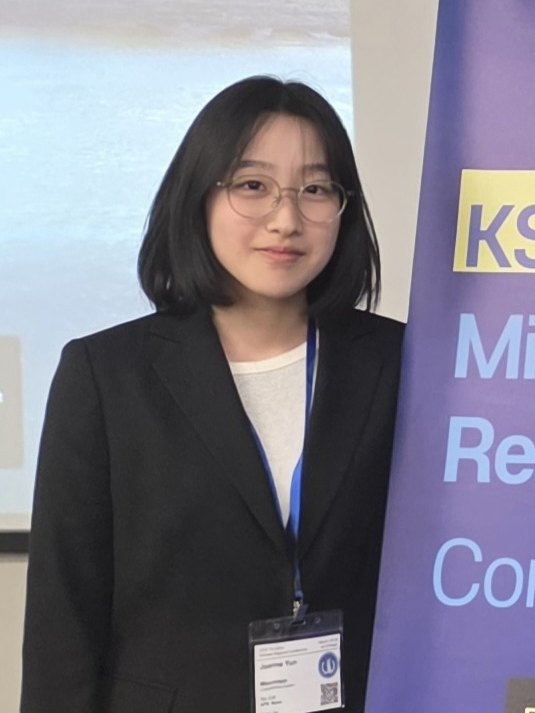

I'm a master's student in Industrial & Systems Engineering at the University of Wisconsin–Madison, where I'm a research assistant in the Flexible Electronics & Additive Printing (FEAP) Lab advised by Prof. Hantang Qin and Prof. Kaibo Liu. This past summer I was a research intern in Prof. Martin Jun's Laboratory for Advanced Multiscale Manufacturing (LAMM) at Purdue University.
I did my B.S. in Industrial Engineering at Ajou University in Suwon, South Korea, where I finished first in my class of 139, and spent my final undergraduate year at UW–Madison as a visiting student. At Ajou I worked in Prof. Jooyeon Lee's New Industrial Convergence R&D Lab on solar-panel telemetry and a microfluidic sweat sensor.
My research is machine learning for manufacturing. Right now I'm most interested in sound: whether a microphone next to a machine can tell us what the process is actually doing, layer by layer. I also work on visual defect inspection and on models that still hold up when the data comes from different machines and labs.
I like to learn new stuff, and my projects show it: inkjet printing, laser powder bed fusion audio, camera calibration, an oral cancer screening app. Manufacturing is where most of them meet. Outside the lab I play violin, build Lego, and keep a long list of movies and books to get through.
Feel free to reach out if you'd like to chat about any of this! Here is my CV.